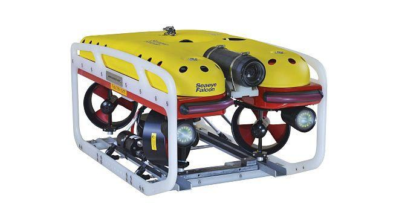
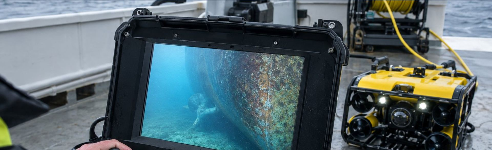

Safety below the waterline
Underwater hull inspections completed within 3 hours of anchoring. Certified divers and a Falcon underwater drone. Inspection report and video in line with Russian Government Decree No. 1867.
- 3hmaximum per vessel inspection
- 5ports from the Barents Sea to the Sea of Japan
- 14companies recommend us, including Gazprom Neft
- 300moperating depth of the Falcon drone
We inspect what is hidden under water: the hull, the bottom, the propeller and rudder. We look for foreign objects, explosives and signs of tampering — before they become a problem.
— 0 m Who we work for
One vessel or an entire fleet — the same attention
For masters and private owners
- One-off inspection of a single vessel — no subscription, no commitments
- Quick inspection at anchor, without unnecessary downtime
- We explain which documents you need and prepare them for you
- We pick the right format: diver, drone or both — no extra costs
For shipping, stevedoring and oil & gas companies
- Regular fleet inspections on an agreed schedule
- Vessel security before loading and unloading
- Mobile teams in any of the ports we cover
- Compliance with the safety standards of major oil & gas projects
— 0 m Services
Four services. One standard.
-
01
Diver inspection of the underwater hull
Certified divers only. Hull, bottom, propeller and rudder are checked for foreign objects, explosives and signs of tampering.
↗ -
02
Inspection with the Falcon drone new
A remotely operated vehicle with a camera and floodlights. Live video on a monitor on deck. Ideal when diving is difficult.
↗ -
03
Video record and inspection report
Every inspection is filmed underwater. You receive a report and video in line with Decree No. 1867 of 25.11.2025.
↗ -
04
Submission to the authorities
Documents go to you and to the supervisory authorities promptly, via secure channels.
↗
— 0 m New service
Underwater drone Falcon

You see the underwater part of your vessel on a monitor during the inspection — no waiting for a report.
The pilot operates the drone from deck: guides it along the hull, stops at any area of interest and records video for the report. You or your master can watch the live feed next to the pilot and ask to take a closer look at any spot.
The drone is light and quick to launch, so the inspection fits into your port stay and doesn't delay the vessel. Where diving is difficult, the drone goes first — no one takes unnecessary risks.
The vehicle is a Saab Seaeye Falcon, a professional remotely operated vehicle (ROV).
- Operating depth
- 300m
- Vehicle length
- ≈1m
- Thrusters
- 5
- Video to deck
- live
What the drone does for you
Hull and bottom survey
Travels along the side and under the bottom, streaming the picture to the pilot without interruption.
Propeller and rudder
Films the propeller, rudder, sea chest gratings and other complex areas in detail.
Search for foreign objects
On-board lighting gives a detailed picture even at depth and in murky water.
Station keeping
Holds position at a suspicious area so it can be examined and recorded without haste.
Where diving is difficult
Preliminary survey and hard-to-reach areas where sending a diver is complicated.
Together with divers
Combined with a diver inspection in one visit — faster and more reliable.

“You see what we see. Every inspection is recorded on video and attached to the report.”
Book a drone inspection— 0 m Real work
An inspection through a diver's eyes
Real footage from our divers: along the side, under the bottom and at the propeller. Every client receives this kind of material together with the report.
— 0 m Our guarantees
Three promises to every client
Speed
A vessel inspection takes no more than three hours from the moment of anchoring.
Complete documentation
Strictly in line with Russian Government Decree No. 1867 of 25.11.2025.
Prompt submission
To you and to the supervisory authorities — via secure communication channels.
— 0 m Process
From request to report — five steps
- 01
Request
A call, an e-mail or the form on this site
- 02
Team dispatch
To the required port as soon as possible
- 03
Inspection
Diver and/or drone — up to 3 hours
- 04
Report & video
Per Decree No. 1867
- 05
Submission
To you and to the supervisory authorities
A one-off inspection or regular fleet service — we discuss every case individually and offer terms that work for you.
— 0 m Ports
We work where your vessels are
- 68°58′ N · 33°05′ E
Murmansk & Murmansk Region
Teriberka · Volokovaya · Kulonga — Barents Sea
Base - 59°56′ N · 30°18′ E
Big Port St. Petersburg
Baltic Sea
- 59°40′ N · 28°24′ E
Ust-Luga
Gulf of Finland
- 60°21′ N · 28°37′ E
Primorsk
Gulf of Finland
- 42°49′ N · 132°53′ E
Nakhodka
Sea of Japan
Our mobile teams are fully equipped and can be sent to any of these ports at short notice. Arctic experience — in any weather and logistics conditions.
— 0 m References
Trusted by industry leaders
Confirms a high standard of work, reliability and compliance with the safety standards of major oil & gas projects.
A positive recommendation from one of Russia's largest oil companies.
- Belfracht JSC
- Infotek Baltika LLC
- Ander Fishing Collective
- Kalinin Fishing Collective
- Saami LLC
- Murmanfishproducts LLC
- Yuzhny Flot LLC
- Invest Flot LLC
- White Agate Marine SPC
- Serpentine Marine SPC
- Pervye Gorizonty LLC
- Idas LLC
— 0 m FAQ
Frequently asked questions
Didn't find an answer? Give us a call — we'll explain in five minutes.
+7 (911) 312-49-49How much does an inspection cost?
The price depends on the vessel's length, the port and the format (diver, drone or both). We quote individually — send a request and we'll get back with an offer.
Do you work with single vessels and small companies?
Yes. We do one-off inspections of a single vessel without a subscription — with the same care as for large fleet operators.
Which documents will I receive?
An inspection report and video in line with Russian Government Decree No. 1867 of 25.11.2025. We submit them to you and to the supervisory authorities.
How is a drone inspection different from a diver inspection?
The Falcon drone is operated from deck and streams live video to a monitor — convenient for a preliminary survey and for areas where diving is difficult. A diver can examine an area by hand in detail. The best result often comes from both in one visit.
How quickly can you arrive?
Our mobile teams are fully equipped and are dispatched to the port at short notice. The inspection itself takes no more than 3 hours from the moment of anchoring.
— 300 m Request
You've reached the seabed.
Let's talk about your vessel.
Fill in the form — we'll call you back during business hours (Moscow time) and suggest an inspection format. Or contact us directly:
- Phone+7 (911) 312-49-49
- Phone+7 (921) 512-97-58
- E-mailflotservicecompany@mail.ru
General Director — R. Yu. Tomskikh